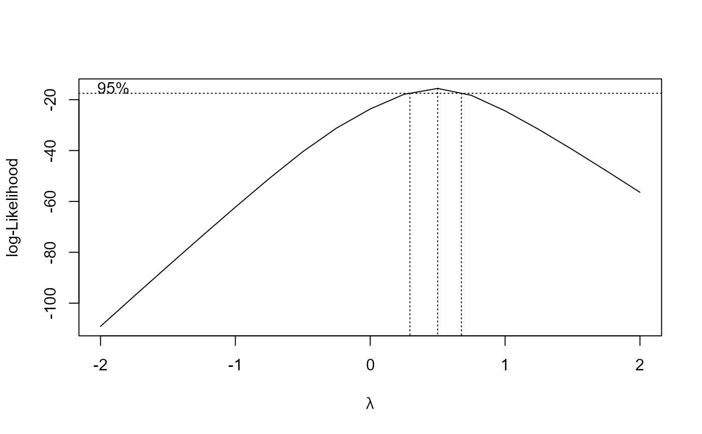

Volume of algae as function of increasing concentrations of a herbicide
algae.RdDataset from an experiment exploring the effect of increasing concentrations of a herbicide on the volume of the treated algae.
Usage
data(algae)Format
A data frame with 14 observations on the following 2 variables.
conca numeric vector of concentrations.
vola numeric vector of response values, that is relative change in volume.
Source
Meister, R. and van den Brink, P. (2000) The Analysis of Laboratory Toxicity Experiments, Chapter 4 in Statistics in Ecotoxicology, Editor: T. Sparks, New York: John Wiley & Sons, (pp. 114–116).
Examples
library(drc)
algae.m1 <- drm(vol~conc, data=algae, fct=LL.3())
summary(algae.m1)
#>
#> Model fitted: Log-logistic (ED50 as parameter) with lower limit at 0 (3 parms)
#>
#> Parameter estimates:
#>
#> Estimate Std. Error t-value p-value
#> b:(Intercept) 1.36244 0.16352 8.3321 4.428e-06 ***
#> d:(Intercept) 104.85893 2.57750 40.6825 2.403e-13 ***
#> e:(Intercept) 6.04062 0.69519 8.6892 2.952e-06 ***
#> ---
#> Signif. codes: 0 '***' 0.001 '**' 0.01 '*' 0.05 '.' 0.1 ' ' 1
#>
#> Residual standard error:
#>
#> 3.911178 (11 degrees of freedom)
algae.m2 <- boxcox(algae.m1)

summary(algae.m2)
#>
#> Model fitted: Log-logistic (ED50 as parameter) with lower limit at 0 (3 parms)
#>
#> Parameter estimates:
#>
#> Estimate Std. Error t-value p-value
#> b:(Intercept) 1.51428 0.10648 14.2207 1.996e-08 ***
#> d:(Intercept) 103.65175 3.96547 26.1386 2.977e-11 ***
#> e:(Intercept) 6.41710 0.73892 8.6845 2.968e-06 ***
#> ---
#> Signif. codes: 0 '***' 0.001 '**' 0.01 '*' 0.05 '.' 0.1 ' ' 1
#>
#> Residual standard error:
#>
#> 0.7137765 (11 degrees of freedom)
#>
#> Non-normality/heterogeneity adjustment through Box-Cox transformation
#>
#> Estimated lambda: 0.5
#> Confidence interval for lambda: [0.294,0.676]
#>